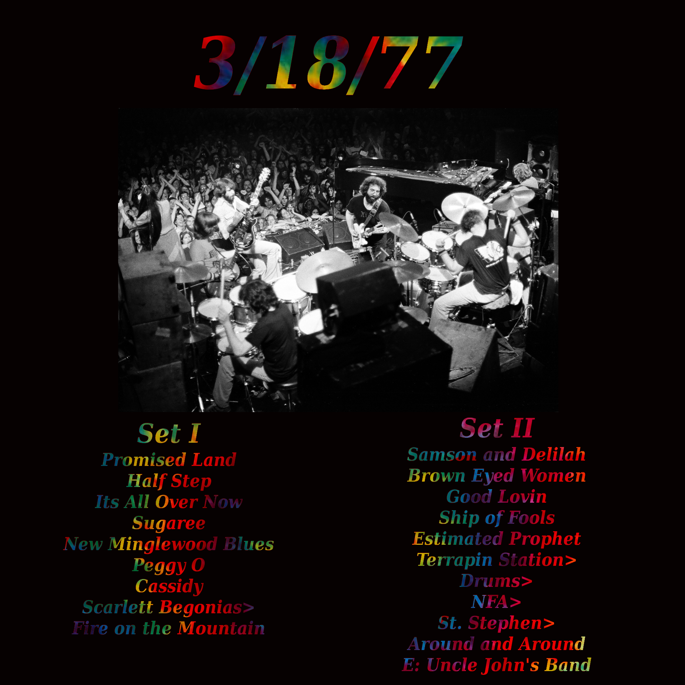
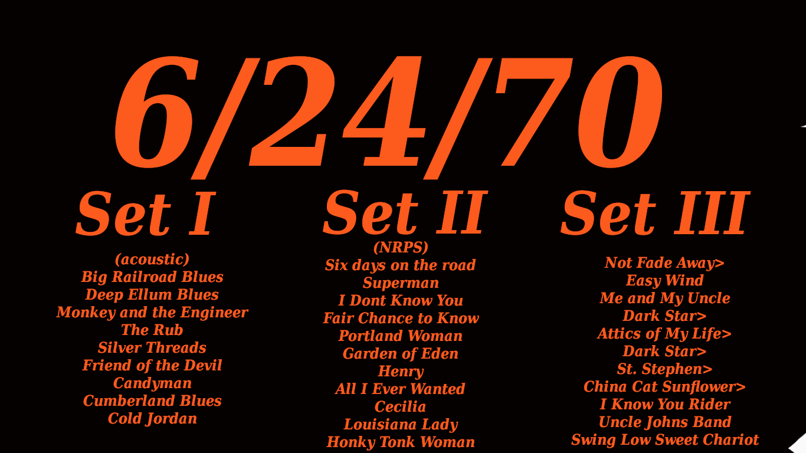
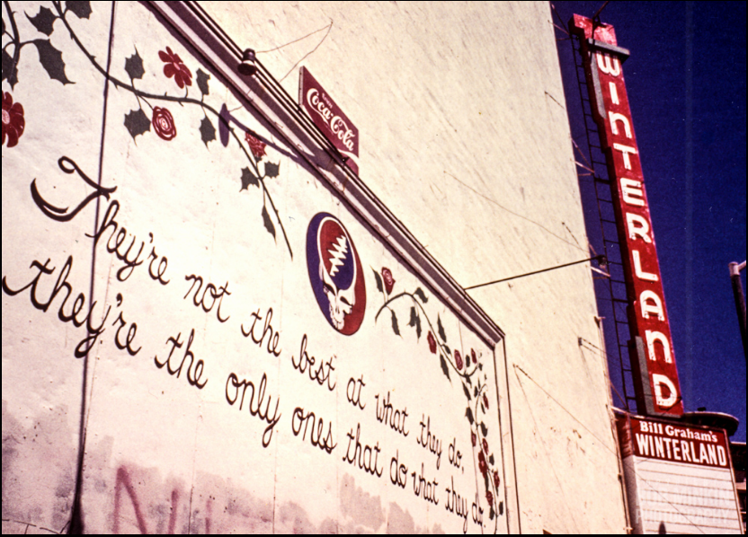

| Show | Source | Notes |
|  | Soundboard Courtesy of Charlie Miller | First ever Fire. Only ever Terrapin Pt. 3 - Check it out! |
|  | Amazing AUD | 3 Sets: Acoustic, NRPS, Electric - Top 5 all time shows. Flawless |

As most people who know me are already aware I'm a big time dead head. Most days, nights, mornings, evenings, (and during every bike ride and total solar eclipse) I like to put on a show or two. At first I would listen to just a few songs, Dire Wolf, Scarlett Begonias, Help on the Way, and they were a part of my normal music rotation. Around my senior year in high school I acquired the Skeletons from the Closet 'greatest hits' album which introduced me to many new songs. I remember my favorites that year were Casey Jones, Mexicali Blues, St. Stephen and Turn on Your Lovelight. That recording definitely improved some long nights at my first job mopping the floors at the local Burger King. Although I was familiar with many of their most famous songs I was far from a "deadhead" and their music occupied space in my musical rotation somewhere between The White Stripes and Nirvana in terms of frequency. This is the way it continued for many years, through college, girlfriends, bands, injuries, fights, and flirtations with homelessness. This is the way it stays for most people who hear Casey Jones but not so in my case. Something changed around Christmas 2016.
There are certain strange events between my job at Burger King and the point in time where I would call myself a "deadhead" but in the interest of brevity I will skip straight to the juicy parts. I was working long boring nights at the time as a janitor where we had 8 hours to complete about 4 hours worth of work. Needless to say this led to an abundance of free time where I could listen to music, watch Youtube videos, or anything else to stay just awake enough to run down the clock until 3:30 AM came around. First I listened to all the Beatles albums, then Zeppelin, Hendrix, the Who, Black Sabbath etc etc until one night I thought to myself "Hey! What the hell I've got four more hours of this to go lets put on a Dead show."
My first full show was 6/19/76 Live at the Capital Theatre here on Youtube I was already familiar with the show as it had the Help on the Way I was familiar with and by the time Cassidy was playing halfway into the first set I was hooked. I wish I could go back and be a new head again. Everything was so new. Playing in the Band, Dancing in the Streets, Not Fade Away. It was surreal. When I first put the show on I didn't think I'd make it all the way through the full 3 hours but before I knew it the show was over and it was already time to clock out. Since that day I've listened to the Dead damn near every day of my life
The first few shows I listened to (from what's left of my memory of that time) were all on Youtube. 5/8/77 5/9/77 and this 71'Grateful Dead Christmas Special Every night I would listen to a new show along with near constant selections from Skeletons from the Closet and another 'Flashback' greatest hits album (which introduced me to some of the later material and I'm sure I pirated) and very quickly I was hungry for more. Around this time I discovered the Grateful Dead Subreddit which introduced to me the single greatest tool in creating a 21st century deadhead: The Grateful Dead Internet Archive
The Archive contains quite literally thousands of shows spanning a career of 30 years and 11 musicians. A few helpful redditors and a cursory google search of "best dead shows" listed dozens of "must hear" performances and as a budding head you feel like you have been brought to your very first all you can eat buffet. There are so many wonderful options and each one you try is more delicious than the last. Again my memory is rather foggy but some of the first shows I listened to on the Archive must have been 2/9/73 with Wavy Gravy, 5/2/70 2/27/69, Veneta 8/27/72 and 5/27/89
After listening to most of the 'essential' beginner's shows I began a new adventure. I decided that in order to become more familiar with the different eras and general evolution of the band I would listen to a show from every year, in order, and over the course of 30 days (well nights at work in my case) get a taste of everything the band has to offer. I will list the shows I think I listened to for each year below but first I'll give a brief synopsis of my experience with this chronological sampler I tasted. The first few years were strange and not at all what I was used to. I hardly recognized their setlists and some of the things Pigpen talked about made me...uncomfortable. Still some the banter between songs and the obvious connection between the audience and the band endeared this era to me and forged what felt like a real personal connection between myself and the music.
As soon as I hit 1970 I was once again among the familiar sounds that I had grown accustomed to. The acoustic material was unique and the jams were as hot as they ever got. 1971 was hard rock balls to the wall and here is where I really started to appreciate Pigpen's Lovelight. 1972 was so polished, so clean, and introduced some songs which would be mainstays through the end. I didn't necessarily love 1973 and 1974 from the beginning. I remember my favorite part being 74's Loose Lucy for whatever reason. I cant remember being impressed by their monster Playin' Jams or the overall unique quality of their jams during this period. Maybe my pallet wasn't developed enough for it just yet, maybe I took it for granted, I'm not entirely sure.
1975 was an amazing listen and I thought 1976 and 1977 sounded pretty much the same. I remember thinking that the quality of the shows began to drop off in 78 and the decline continued pretty much until the late 80's. I liked the new songs introduced in the early 80's but I definitely was 'going through the motions' that week or two between 79 and 85. One thing to note is that I didn't get bored, or discouraged, at all during this time. I knew the music wasn't as good as Cornell or Wembley 72 but I felt determined to complete my mission and hear a show from every year. "Ten more nights then I'll go back to 77" I would tell myself while hearing Jerry's voice break on Brokedown Palace.
1986 was the year where the music began to turn around. Suddenly the energy and fun was back and from here through 1990 each show I listened to was better than the last. The same can not be said of the 90's. Unfortunately this was the steepest and sharpest decline of their carreer and ended in Jerry's tragic death. 91 was alright, 92 was bad, 93 also bad, by 94 I was literally ready to listen to Cornell again (and in fact I may have taken a cheat day around this time) but I said "one more show come on" I listened to their final show and man it was tough. Sad is a good word, but still I wasnt dissapointed, or discouraged, or put off from the dead and do you know what I listened to the very next night? More Grateful Dead!
After 30 shows I just wasnt satisfied. After this I listened to every Dick's Picks and selections from the Road Trips and on and on and on. Somehow here I am, sitting on my laptop at 2:47 the morning of Sun April 26, 2020, over three years later, and I am STILL listening to the Grateful Dead almost non-stop. If you've read this far I could go on and tell many stories of how the music related to my life and my coming of age during this time but I will leave those for another time and another space on this site. I will leave you with the promised 'dead by the year' list and a wonderful quote by Legendary Bill Graham "They're not the best at what they do, they're the only ones who do what they do"

Photo by Bob MinkinPlease note this list does not constitue any kind of futile attempt to choose a 'best of the year' show nor is is a reccomendation of shows to listen to if you're just getting into the dead but rather an attempt to record the 30 shows I listened to in order which I consider a turning point in my becoming a deadhead. I leave it here for the reader's interest and the writer's memory.
| Year | Source | Comments |
| 1965 | 1/8/66 Acid Test SBD | Geary/Fillmore - Cops shut it down so the gang sings the National Anthem |
| 1967 | 3/18/67 Soundboard | Steiner/Post - Back when Jerry played Golden Road and Cream Puff War... |
| 1968 | Valentine's Day | Market/Van Ness - Featuring Embryonic versions of Dark Star and TIFTOO. Heady Alligator and plenty of acid |
| 1969 | Woodstock | Electrocution at midningt - Pretty much universally believed to be a 'weak' show. I thought it was 'OK' |
| 1970 | 5/15/70 Soundboard | Over 6 hours of music including 2 acoustic sets, 2 electric sets and 2 sets by the New Riders of the Purple Sage. I am fairly certain I skipped the NRPS music at the time |
| 1971 | 8/6/71 AUD - HEADY! | Easily one of my favorite shows (and one of the great AUDs of all time) The show where I learned to love Pigpen and a guy plays singalong as a train during Casey Jones. 10/10 |
| 1972 | 4/8/72 Miller Soundboard | My first Europe 72 show features a really great Dark Star and Caution. All these years later and I still listen to this one the most out of the whole tour... |
| 1973 | 6/10/73 Miller Soundboard | Most popular recording on The Archive with over a million listens. Third set they jam with the Allman Brothers. |
| 1974 | 5/19/74 Miller Soundboard | One of the greatest second sets of all time. Sweet Weather Report Suite and a MONSTER Truckin' |
| 1975 | 8/13/75 FM Broadcast | Amazing show, though rather short. One of only 4 in this 'hiatus' year they play the best Help>Slip>Frank AND a rare Blues for Allah! |
| 1976 |